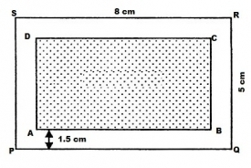
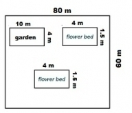
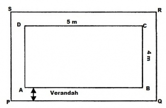
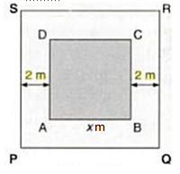
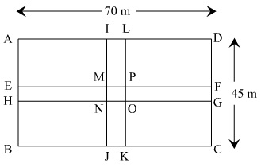
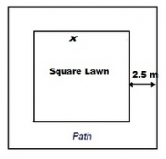
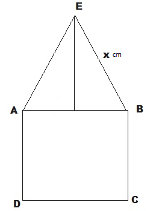
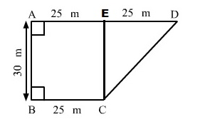

Question:1
Find the area, in square metres, of a rectangle whose
(i) Length = 5.5 m, breadth = 2.4 m
(ii) Length = 180 cm, breadth = 150 cm
Solution:
We have,
(i) Length = 5.5 m, Breadth = 2.4 m
Therefore,
Area of rectangle = Length x Breadth
= 5.5 m x 2.4 m
= 13.2 m2
(ii) Length = 180 cm = 1.8 m, Breadth = 150 cm = 1.5 m [ Since 100 cm = 1 m]
Therefore,
Area of rectangle = Length x Breadth
= 1.8 m x 1.5 m
= 2.7 m2
Question:2
Find the area, in square centimetres, of a square whose side is
(i) 2.6 cm
(ii) 1.2 dm
Solution:
We have,
(i) Side of the square = 2.6 cm
Therefore, area of the square = (Side)2
= (2.6 cm)2 = 6.76 cm2
(ii) Side of the square = 1.2 dm = 1.2 x 10 cm = 12 cm [ Since 1 dm = 10 cm]
Therefore, area of the square = (Side)2
= (12 cm)2 = 144 cm2
Question:3
Find in square metres, the area of a square of side 16.5 dam.
Solution:
We have,
Side of the square = 16.5 dam = 16.5 x 10 m = 165 m [ Since 1 dam = 10 m ]
Area of the square = (Side)2 = (165 m)2
= 27225 m2
Question:4
Find the area of a rectangular feild in ares whose sides are:
(i) 200 m and 125 m
(ii) 75 m 5 dm and 125 m
Solution:
We have,
(i) Length of the rectangular field = 200 m
Breadth of the rectangular field = 125 m
Therefore,
Area of the rectangular field = Length x Breadth
= 200 m x 125 m
= 25000 m2 = 250 ares [Since 100 m2 = 1 are]
(ii) Length of the rectangular field =75 m 5 dm = (75 + 0.5) m = 75.5 m [Since 1 dm = 10 cm = 0.1 m]
Breadth of the rectangular field = 120 m
Therefore,
Area of the rectangular field = Length x Breadth
= 75.5 m x 120 m
= 9060 m2 = 90.6 ares [Since 100 m2 = 1 are]
Question:5
Find the area of a rectangular field in hectares whose sides are:
(i) 125 m and 400 m
(ii) 75 m 5 dm and 120 m
Solution:
We have,
(i) Length of the rectangular field = 125 m
Breadth of the rectangular field = 400 m
Therefore,
Area of the rectangular field = Length x Breadth
= 125 m x 400 m
= 50000 m2 = 5 hectares [Since 10000 m2 = 1 hectare]
(ii) Length of the rectangular field =75 m 5 dm = (75 + 0.5) m = 75.5 m [Since 1 dm = 10 cm = 0.1 m]
Breadth of the rectangular field = 120 m
Therefore,
Area of the rectangular field = Length x Breadth
= 75.5 m x 120 m
= 9060 m2 = 0.906 hectares [Since 10000 m2 = 1 hectare]
Question:6
A door of dimensions 3 m × 2m is on the wall of dimension 10 m × 10 m. Find the cost of painting the wall if rate of painting is Rs 2.50 per sq. m.
Solution:
We have,
Length of the door = 3 m
Breadth of the door = 2 m
Side of the wall = 10 m
Area of the wall = Side x Side = 10 m x 10 m = 100 m2
Area of the door = Length x Breadth = 3 m x 2 m = 6 m2
Thus,
Required area of the wall for painting = Area of the wall − Area of the door = (100 − 6 ) m2 = 94 m2
Rate of painting per square metre = Rs. 2.50
Hence, the cost of painting the wall = Rs. (94 x 2.50) = Rs. 235
Question:7
A wire is in the shape of a rectangle. Its length is 40 cm and breadth is 22 cm. If the same wire is bent in the shape of a square, what will be the measure of each side. Also, find which side encloses more area?
Solution:
We have,
Perimeter the of rectangle = 2(Length + Breadth)
= 2(40 cm + 22 cm) = 124 cm
It is given that the wire which was in the shape of a rectangle is now bent into a square.
Therefore, the perimeter of the square = Perimeter of the rectangle
=> Perimeter of the square = 124 cm
⇒ 4 x side = 124 cm
∴ Side =
Now,
Area of the rectangle = 40 cm x 22 cm = 880 cm2
Area of the square = (Side)2 = (31 cm)2 = 961 cm2
Therefore, the square-shaped wire encloses more area.
Question:8
How many square metres of glass will be required for a window, which has 12 panes, each pane measuring 25 cm by 16 cm?
Solution:
We have,
Length of the glass pane = 25 cm
Breadth of the glass pane = 16 cm
Area of one glass pane = 25 cm x 16 cm = 400 cm2 = 0.04 m2 [ Since 1 m2 = 10000 cm2 ]
Thus,
Area of 12 such panes = 12 x 0.04 = 0.48 m2
Question:9
A marble tile measures 10 cm × 12 cm. How many tiles will be required to cover a wall of size 3 m × 4 m? Also, find the total cost of the tiles at the rate of Rs 2 per tile.
Solution:
We have,
Area of the wall = 3 m x 4 m = 12 m2
Area of one marble tile = 10 cm x 12 cm = 120 cm2 = 0.012 m2 [ Since 1 m2 = 10000 cm2 ]
Thus,
Number of tiles =
Cost of one tile = Rs. 2
Total cost = Number of tiles x Cost of one tile
= Rs. (1000 x 2) = Rs. 2000
Question:10
A table top is 9 dm 5 cm long 6 dm 5 cm broad. What will be the cost to polish it at the rate of 20 paise per square centimetre?
Solution:
We have,
Length of the table top = 9 dm 5 cm = (9 x 10 + 5) cm = 95 cm [ Since 1 dm = 10 cm]
Breadth of the table top = 6 dm 5 cm = (6 x 10 + 5) cm = 65 cm
∴ Area of the table top = Length x Breadth = (95 cm x 65 cm) = 6175 cm2
Rate of polishing per square centimetre = 20 paise = Rs. 0.20
Total cost = Rs. (6175 x 0.20) = Rs. 1235
Question:11
A room is 9.68 m long and 6.2 m wide. Its floor is to be covered with rectangular tiles of size 22 cm by 10 cm. Find the total cost of the tiles at the rate of Rs 2.50 per tile.
Solution:
We have,
Length of the floor of the room = 9.68 m
Breadth of the floor of the room = 6.2 m
Area of the floor = 9.68 m x 6.2 m = 60.016 m2
Length of the tile = 22 cm
Breadth of the tile = 10 cm
Area of one tile = 22 cm x 10 cm = 220 cm2 = 0.022 m2 [Since 1 m2 = 10000 cm2]
Thus,
Number of tiles =
Cost of one tile = Rs. 2.50
Total cost = Number of tiles x Cost of one tile
= Rs. (2728 x 2.50) = Rs. 6820
Question:12
One side of a square field is 179 m. Find the cost of raising a lown on the field at the rate of Rs 1.50 per square metre.
Solution:
We have,
Side of the square field = 179 m
Area of the field = (Side)2 = (179 m)2 = 32041 m2
Rate of raising a lawn on the field per square metre = Rs. 1.50
Thus,
Total cost of raising a lawn on the field = Rs.(32041 x 1.50) = Rs. 48061.50
Question:13
A rectangular field is measured 290 m by 210 m. How long will it take for a girl to go two times round the field, if she walks at the rate of 1.5 m/sec?
Solution:
We have,
Length of the rectangular field = 290 m
Breadth of the rectangular field = 210 m
Perimeter of the rectangular field = 2(Length + Breadth)
= 2(290 + 210) = 1000 m
Distance covered by the girl = 2 x Perimeter of the rectangular field
= 2 x 1000 = 2000 m
The girl walks at the rate of 1.5 m/sec.
or,
Rate = 1.5 x 60 m/min = 90 m/min
Thus,
Required time to cover a distance of 2000 m =
Hence, the girl will take to go two times around the field.
Question:14
A corridor of a school is 8 m long and 6 m wide. It is to be covered with convas sheets. If the available canvas sheets have the size 2 m × 1 m, find the cost of canvas sheets required to cover the corridor at the rate of Rs 8 per sheet.
Solution:
We have,
Length of the corridor = 8 m
Breadth of the corridor = 6 m
Area of the corridor of a school = Length x Breadth = (8 m x 6 m) = 48 m2
Length of the canvas sheet = 2 m
Breadth of the canvas sheet = 1 m
Area of one canvas sheet = Length x Breadth = (2 m x 1 m) = 2 m2
Thus,
Number of canvas sheets =
Cost of one canvas sheet = Rs. 8
∴ Total cost of the canvas sheets = Rs. (24 x 8) = Rs. 192
Question:15
The length and breadth of a playground are 62 m 60 cm and 25 m 40 cm respectively. Find the cost of turfing it at Rs 2.50 per square metre. How long will a man take to go three times round the field, if he walks at the rate of 2 metres per second.
Solution:
We have,
Length of a playground = 62 m 60 cm = 62.6 m [ Since 10 cm = 0.1 m]
Breadth of a playground = 25 m 40 cm = 25.4 m
Area of a playground = Length x Breadth= 62.6 m x 25.4 m = 1590.04 m2
Rate of turfing = Rs. 2.50/m2
∴ Total cost of turfing = Rs. (1590.04 x 2.50) = Rs. 3975.10
Again,
Perimeter of a rectangular field = 2(Length + Breadth)
= 2(62.6 + 25.4) = 176 m
Distance covered by the man in 3 rounds of a field = 3 x Perimeter of a rectangular field
= 3 x 176 m = 528 m
The man walks at the rate of 2 m/sec.
or,
Rate = 2 x 60 m/min = 120 m/min
Thus,
Required time to cover a distance of 528 m =
= 4 minutes 24 seconds [ since 0.1 minutes = 6 seconds]
Question:16
A lane 180 m long and 5 m wide is to be paved with bricks of length 20 cm and breadth 15 cm. Find the cost of bricks that are required, at the rate of Rs 750 per thousand.
Solution:
We have,
Length of the lane = 180 m
Breadth of the lane = 5 m
Area of a lane = Length x Breadth = 180 m x 5 m = 900 m2
Length of the brick = 20 cm
Breadth of the brick = 15 cm
Area of a brick = Length x Breadth = 20 cm x 15 cm = 300 cm2 = 0.03 m2 [Since 1 m2 = 10000 cm2 ]
Required number of bricks =
Cost of 1000 bricks = Rs. 750
∴ Total cost of 30,000 bricks = Rs.
Question:17
How many envelopes can be made out of a sheet of paper 125 cm by 85 cm; supposing one envelope requires a piece of paper of size 17 cm by 5 cm?
Solution:
We have,
Length of the sheet of paper = 125 cm
Breadth of the sheet of paper = 85 cm
Area of a sheet of paper = Length x Breadth = 125 cm x 85 cm = 10,625 cm2
Length of sheet required for an envelope = 17 cm
Breadth of sheet required for an envelope = 5 cm
Area of the sheet required for one envelope = Length x Breadth = 17 cm x 5 cm = 85 cm2
Thus,
Required number of envelopes =
Question:18
The width of a cloth is 170 cm. Calculate the length of the cloth required to make 25 diapers, if each diaper requires a piece of cloth of size 50 cm by 17 cm.
Solution:
We have,
Length of the diaper = 50 cm
Breadth of the diaper = 17 cm
Area of cloth to make 1 diaper = Length x Breadth = 50 cm x 17 cm = 850 cm2
Thus,
Area of 25 such diapers = (25 x 850) cm2 = 21,250 cm2
Area of total cloth = Area of 25 diapers
= 21,250 cm2
It is given that width of a cloth = 170 cm
∴ Length of the cloth =
Hence, length of the cloth will be 125 cm.
Question:19
The carpet for a room 6.6 m by 5.6 m costs Rs 3960 and it was made from a roll 70 cm wide. Find the cost of the carpet per metro.
Solution:
We have,
Length of a room = 6.6 m
Breadth of a room = 5.6 m
Area of a room = Length x Breadth = 6.6 m x 5.6 m = 36.96 m2
Width of a carpet = 70 cm = 0.7 m [Since 1 m = 100 cm]
Length of a carpet =
Cost of 52.8 m long roll of carpet = Rs. 3960
Therefore,
Cost of 1 m long roll of carpet = Rs.
Question:20
A room is 9 m long, 8 m broad and 6.5 m high. It has one door of dimensions 2 m × 1.5 m and three windows each of dimensions 1.5 m × 1 m. Find the cost of white washing the walls at Rs 3.80 per square metre.
Solution:
We have,
Length of a room = 9 m
Breadth of a room = 8 m
Height of a room = 6.5 m
Area of 4 walls = 2(l + b)h
= 2(9 m + 8 m) x 6.5 m = 2 x 17 m x 6.5 m = 221 m2
Length of a door = 2 m
Breadth of a door = 1.5 m
Area of a door = Length x Breadth = 2 m x 1.5 m = 3 m2
Length of a window = 1.5 m
Breadth of a window = 1 m
Since, area of one window = Length x Breadth = 1.5 m x 1 m = 1.5 m2
Thus,
Area of 3 such windows = 3 x 1.5 m2 = 4.5 m2
Area to be white-washed = Area of 4 walls − (Area of one door + Area of 3 windows)
Area to be white-washed = [221 − (3 + 4.5 )] m2
= (221 − 7.5 ) m2 = 213.5 m2
Cost of white-washing for 1 m2 area = Rs. 3.80
∴ Cost of white-washing for 213.5 m2 area = Rs. (213.5 x 3.80) = Rs. 811.30
Question:21
A hall 36 m long and 24 m broad allowing 80 m2 for doors and windows, the cost of papering the walls at Rs 8.40 per m2 is Rs 9408. Find the height of the hall.
Solution:
We have,
Length of the hall = 36 m
Breadth of the hall = 24 m
Let h be the height of the hall.
Now, in papering the wall, we need to paper the four walls excluding the floor and roof of the hall.
So, the area of the wall which is to be papered = Area of 4 walls
= 2h(l + b)
= 2h (36 + 24) = 120h m2
Now, area left for the door and the windows = 80 m2
So, the area which is actually papered = (120h − 80) m2
Again,
The cost of papering the walls at Rs 8.40 per m2 = Rs. 9408.
⇒ (120h − 80) m2 x Rs. 8.40 per m2 = Rs. 9408
⇒ (120h − 80) m2 =
⇒ (120h − 80) m2 = 1120 m2
⇒ 120h m2 = (1120 + 80) m2
⇒ 120h m2 = 1200 m2
∴ h =
Hence, the height of the wall would be 10 m.
Question:22
A rectangular grassy lawn measuring 40 m by 25 m is to be surrounded externally by a path which is 2 m wide. Calculate the cost of levelling the path at the rate of Rs 8.25 per square metre.
Solution:
We have,
Length
AB = 40 m and breadth
BC = 25 m
.jpg)
∴ Area of lawn
ABCD = 40 m x 25 m = 1000 m
2
Length
PQ = (40 + 2 + 2 ) m = 44 m
Breadth
QR = ( 25 + 2 + 2 ) m = 29 m
∴ Area of
PQRS = 44 m x 29 m = 1276 m
2
Now,
Area of the path = Area of
PQRS − Area of the lawn
ABCD
= 1276 m
2 − 1000 m
2
= 276 m
2
Rate of levelling the path = Rs. 8.25 per m
2
∴ Cost of levelling the path = Rs. ( 8.25 x 276)
= Rs. 2277
Question:23
One metre wide path is built inside a square park of side 30 m along its sides. The remaining part of the park is covered by grass. If the total cost of covering by grass is Rs 1176, find the rate per square metre at which the park is covered by the grass.
Solution:
We have,
The side of the square garden (
a) = 30 m

∴ Area of the square garden including the path =
a2 = (30)
2 = 900 m
2
From the figure, it can be observed that the side of the square garden, when the path is not included, is 28 m.
Area of the square garden not including the path = (28)
2 = 784 m
2
Total cost of covering the park with grass = Area of the park covering with green grass x Rate per square metre
1176 = 784 x Rate per square metre
∴ Rate per square metre at which the park is covered with grass = Rs. (1176 ÷ 784 )
= Rs. 1.50
Question:24
Through a rectangular field of sides 90 m × 60 m, two roads are constructed which are parallel to the sides and cut each other at right angles through the centre of the field. If the which of the road is 3 m, find the total area cobered by the two roads.
Solution:
We have,
Length of the rectangular field = 90 m and breadth of the rectangular field = 60 m
.jpg)
∴ Area of the rectangular field = 90 m x 60 m = 5400 m
2
Area of the road
PQRS = 90 m x 3 m = 270 m
2
Area of the road
ABCD = 60 m x 3 m = 180 m
2
Clearly, area of
KLMN is common to the two roads.
Thus, area of KLMN = 3 m x 3 m = 9 m
2
Hence,
Area of the roads = Area (
PQRS) + Area (
ABCD) − Area (
KLMN)
= (270 + 180 )m
2 − 9 m
2 = 441 m
2
Question:25
From a rectangular sheet of tin, of size 100 cm by 80 cm, are cut four squares of side 10 cm from each corner. Find the area of the remaining sheet.
Solution:
We have,

Length of the rectangular sheet = 100 cm
Breadth of the rectangular sheet = 80 cm
Area of the rectangular sheet of tin = 100 cm x 80 cm = 8000 cm
2
Side of the square at the corner of the sheet = 10 cm
Area of one square at the corner of the sheet = (10 cm)
2 = 100 cm
2
∴ Area of 4 squares at the corner of the sheet = 4 x 100 cm
2 = 400 cm
2
Hence,
Area of the remaining sheet of tin =Area of the rectangular sheet − Area of the 4 squares
Area of the remaining sheet of tin = (8000
− 400) cm
2
= 7600 cm
2
Question:26
A painting 8 cm long and 5 cm wide is painted on a cardboard such that there is a margin of 1.5 cm along each of its sides. Fund the total area of the margin.
Solution:
We have,
Length of the cardboard = 8 cm and breadth of the cardboard = 5 cm

∴ Area of the cardboard including the margin = 8 cm x 5 cm = 40 cm2
From the figure, it can be observed that,
New length of the painting when the margin is not included = 8 cm − (1.5 cm + 1.5 cm) = (8 − 3) cm = 5 cm
New breadth of the painting when the margin is not included = 5 cm − (1.5 cm + 1.5 cm) = (5 − 3) cm = 2 cm
∴ Area of the painting not including the margin = 5 cm x 2 cm = 10 cm2
Hence,
Area of the margin = Area of the cardboard including the margin − Area of the painting
= (40 − 10) cm2
= 30 cm2
Question:27
Rakesh has a rectangular field of length 80 m and breadth 60 m. In it, he wants to make a garden 10 m long and 4 m broad at one of the corners and at another corner, he wants to grow flowers in two floor-beds each of size 4 m by 1.5 m. In the remaining part of the field, he wants to apply mansures. Find the cost of applying the manures at the rate of Rs 300 per are.
Solution:
Length of the rectangular field = 80 m
Breadth of the rectangular field = 60 m

∴ Area of the rectangular field = 80 m x 60
= 4800 m2
Again,
Area of the garden = 10 m x 4 m = 40 m2
Area of one flower bed = 4 m x 1.5 m = 6 m2
Thus,
Area of two flower beds = 2 x 6 m2 = 12 m2
Remaining area of the field for applying manure = Area of the rectangular field − (Area of the garden + Area of the two flower beds)
Remaining area of the field for applying manure = 4800 m2 − (40 + 12 ) m2
= (4800 − 52 )m2
= 4748 m2
Since 100 m2 = 1 are
∴ 4748 m2 = 47.48 ares
So, cost of applying manure at the rate of Rs. 300 per are will be Rs. (300 x 47.48) = Rs. 14244
Question:28
Each side of a square flower bed is 2 m 80 cm long. It is extended by digging a strip 30 cm wide all around it. Find the area of the enlarged flower bed and also the increase in the area of the flower bed.
Solution:
We have,
Side of the flower bed = 2 m 80 cm = 2.80 m [ Since 100 cm = 1 m]

∴ Area of the square flower bed = (Side)
2 = (2.80 m )
2 = 7.84 m
2
Side of the flower bed with the digging strip = 2.80 m + 30 cm + 30 cm
= (2.80 + 0.3 + 0.3) m = 3.4 m
Area of the enlarged flower bed with the digging strip = (Side )
2 = (3.4 )
2 = 11.56 m
2
Thus,
Increase in the area of the flower bed = 11.56 m
2 − 7.84 m
2
= 3.72 m
2
Question:29
A room 5 m long and 4 m wide is surrounded by a verandah. If the verandah occupies an area of 22 m2, find the width of the varandah.
Solution:
Let the width of the verandah be x m.
Length of the room AB = 5 m and BC = 4 m

∴ Area of the room = 5 m x 4 m = 20 m2
Length of the verandah PQ = (5 + x + x) = (5 + 2x) m
Breadth of the verandah QR = ( 4 + x + x) = (4 + 2x) m
Area of verandah PQRS = (5 + 2x) x (4 + 2x) = (4x2 + 18x + 20 ) m2
∴ Area of verandah = Area of PQRS − Area of ABCD
⇒ 22 = 4x2 + 18x + 20 − 20
⇒ 22 = 4x2 + 18x
⇒ 11 = 2x2 + 9x
⇒ 2x2 + 9x − 11 = 0
⇒ 2x2 + 11x − 2x − 11 = 0
⇒ x(2x + 11) − 1(2x + 11) = 0
⇒ (x − 1) (2x +11) = 0
When x − 1 = 0, x = 1
When 2x + 11 = 0, x =
The width cannot be a negative value.
So, width of the verandah = x = 1 m.
Question:30
A square lawn has a 2 m wide path surrounding it. If the area of the path is 136 m2, find the area of the lawn.
Solution:
We have,
Let ABCD be the square lawn and PQRS be the outer boundary of the square path.

Let side of the lawn AB be x m.
Area of the square lawn = x2
Length PQ = (x m + 2 m + 2 m) = (x + 4) m
∴ Area of PQRS = (x + 4)2 = (x2 + 8x + 16) m2
Now,
Area of the path = Area of PQRS − Area of the square lawn
⇒ 136 = x2 + 8x + 16 − x2
⇒ 136 = 8x + 16
⇒ 136 − 16 = 8x
⇒ 120 = 8x
∴ x = 120 ÷ 8 = 15
∴ Side of the lawn = 15 m
Hence,
Area of the lawn = (Side)2 = (15 m)2 = 225 m2
Question:31
A poster of size 10 cm by 8 cm is pasted on a sheet of cardboard such that there is a margin of width 1.75 cm along each side of the poster. Find (i) the total area of the margin (ii) the cost of the cardboard used at the rate of Re 0.60 per cm2.
Solution:
We have,
Length of the poster = 10 cm and breadth of the poster = 8 cm

∴ Area of the poster = Length x Breadth = 10 cm x 8 cm = 80 cm
2
From the figure, it can be observed that,
Length of the cardboard when the margin is included = 10 cm + 1.75 cm + 1.75 cm = 13.5 cm
Breadth of the cardboard when the margin is included = 8 cm + 1.75 cm + 1.75 cm = 11.5 cm
∴ Area of the cardboard = Length x Breadth = 13.5 cm x 11.5 cm = 155.25 cm
2
Hence,
(i) Area of the margin = Area of cardboard including the margin − Area of the poster
= 155.25 cm
2 − 80 cm
2
= 75.25 cm
2
(ii) Cost of the cardboard = Area of the cardboard x Rate of the cardboard Rs. 0.60 per cm
2
= Rs. (155.25 x 0.60)
= Rs. 93.15
Question:32
A rectangulr field is 50 m by 40 m. It has two roads through its centre, running parallel to its sides. The width of the longer and shorter roads are 1.8 m and 2.5 m respectively. Find the area of the roads and the erea of the remaining portion of the field.
Solution:
Let
ABCD be the rectangular field and
KLMN and
PQRS the two rectangular roads with width 1.8 m and 2.5 m, respectively.

Length of the rectangular field
CD = 50 cm and breadth of the rectangular field
BC = 40 m
∴ Area of the rectangular field
ABCD = 50 m x 40 m = 2000 m
2
Area of the road
KLMN = 40 m x 2.5 m = 100 m
2
Area of the road
PQRS = 50 m x 1.8 m = 90 m
2
Clearly area of
EFGH is common to the two roads.
Thus, Area of
EFGH = 2.5 m x 1.8 m = 4.5 m
2
Hence,
Area of the roads = Area (
KLMN) + Area (
PQRS) − Area (
EFGH)
= (100 m
2 + 90 m
2) − 4.5 m
2 = 185.5 m
2
Area of the remaining portion of the field = Area of the rectangular field
ABCD − Area of the roads
= (2000 − 185.5) m
2
= 1814.5 m
2
Question:33
There is a rectangular field of size 94 m × 32 m. Three roads each of 2 m width pass through the field such that two roads are parallel to the breadth of the field and the third is parallel to the length. Calculate: (i) area of the field covered by the three roads (ii) area of the field not covered by the roads.
Solution:
Let
ABCD be the rectangular field.
Here,
Two roads which are parallel to the breadth of the field
KLMN and
EFGH with width 2 m each.
One road which is parallel to the length of the field
PQRS with width 2 m.

Length of the rectangular field
AB = 94 m and breadth of the rectangular field
BC = 32 m
∴ Area of the rectangular field = Length x Breadth = 94 m x 32 m = 3008 m
2
Area of the road
KLMN = 32 m x 2 m = 64 m
2
Area of the road
EFGH = 32 m x 2 m = 64 m
2
Area of the road
PQRS = 94 m x 2 m = 188 m
2
Clearly area of
TUVI and
WXYZ is common to these three roads.
Thus,
Area of
TUVI = 2 m x 2 m = 4 m
2
Area of
WXYZ = 2 m x 2 m = 4 m
2
Hence,
(i) Area of the field covered by the three roads:
= Area (
KLMN) + Area (
EFGH) + Area (
PQRS) − {Area (
TUVI ) + Area (
WXYZ)}
= [ 64+ 64 + 188 − (4 + 4
)] m
2
= 316 m
2 − 8 m
2
= 308 m
2
(ii) Area of the field not covered by the roads:
= Area of the rectangular field
ABCD − Area of the field covered by the three roads
= 3008 m
2 − 308 m
2
= 2700 m
2
Question:34
A school has a hall which is 22 m long and 15.5 m broad. A carpet is laid inside the hall leaving all around a margin of 75 cm from the walls. Find the area of the carpet and the area of the strip left uncoverd. If the width of the carpet is 82 cm, find the cost at the rate of Rs 18 per metre.
Solution:
We have,
Length of the hall
PQ = 22 m and breadth of the hall
QR = 15.5 m

∴ Area of the school hall
PQRS = 22 m x 15.5 m = 341 m
2
Length of the carpet
AB = 22 m − ( 0.75 m + 0.75 m) = 20.5 m [ Since 100 cm = 1 m]
Breadth of the carpet
BC = 15.5 m − ( 0.75 m + 0.75 m) = 14 m
∴ Area of the carpet
ABCD = 20.5 m x 14 m = 287 m
2
Area of the strip = Area of the school hall
PQRS − Area of the carpet
ABCD
= 341 m
2 − 287 m
2
= 54 m
2
Again,
Area of the 1 m length of carpet = 1 m x 0.82 m = 0.82 m
2
Thus,
Length of the carpet
whose area is 287 m
2 = 287 m
2 ÷ 0.82 m
2 = 350 m
Cost of the 350 m long carpet = Rs. 18 x 350 = Rs. 6300
Question:35
Two cross roads, each of width 5 m, run at right angles through the centre of a rectangular park of length 70 m and breadth 45 m parallel to its sides. Find the area of the roads. Also, find the cost of constructing the roads at the rate of Rs 105 per m2.
Solution:
Let ABCD be the rectangular park then EFGH and IJKL the two rectangular roads with width 5 m.

Length of the rectangular park AD = 70 cm
Breadth of the rectangular park CD = 45 m
∴ Area of the rectangular park = Length x Breadth = 70 m x 45 m = 3150 m2
Area of the road EFGH = 70 m x 5 m = 350 m2
Area of the road JKIL = 45 m x 5 m = 225 m2
Clearly area of MNOP is common to the two roads.
Thus, Area of MNOP = 5 m x 5 m = 25 m2
Hence,
Area of the roads = Area (EFGH) + Area (JKIL) − Area (MNOP)
= (350 + 225 ) m2− 25 m2 = 550 m2
Again, it is given that the cost of constructing the roads = Rs. 105 per m2
Therefore,
Cost of constructing 550 m2 area of the roads = Rs. (105 × 550)
= Rs. 57750.
Question:36
The length and breadth of a rectangular park are in the ratio 5 : 2. A 2.5 m wide path running all around the outside the park has an area 305 m2. Find the dimensiions of the park.
Solution:
We have,
Area of the path = 305 m
2

Let the length of the park be 5
x m and the breadth of the park be 2
x m
Thus,
Area of the rectangular park = 5
x x 2
x = 10
x2 m
2
Width of the path = 2.5 m
Outer length
PQ = 5
x m
+ 2.5 m + 2.5 m
= (5
x + 5) m
Outer breadth
QR = 2
x + 2.5 m + 2.5 m
= (2
x + 5) m
Area of
PQRS = (5
x + 5) m x (2
x + 5) m = (10
x2 + 25
x + 10
x + 25) m
2= (10
x2 + 35
x + 25) m
2
∴ Area of the path = [(10
x2 + 35
x + 25) − 10
x2 ] m
2
⇒ 305 = 35
x + 25
⇒ 305 − 25 = 35
x
⇒ 280 = 35
x
⇒
x = 280 ÷ 35 = 8
Therefore,
Length of the park = 5
x = 5 x 8 = 40 m
Breadth of the park = 2
x = 2 x 8 = 16 m
Question:37
A square lawn is surrounded by a path 2.5 m wide. If the area of the path is 165 m2, find the area of the lawn.
Solution:
Let the side of the lawn be x m.

Given that width of the path = 2.5 m
Side of the lawn including the path = (x + 2.5 + 2.5) m = (x + 5 ) m
So, area of lawn = (Area of the lawn including the path) − (Area of the path)
We know that the area of a square = (Side)2
∴ Area of lawn (x2 ) = (x + 5)2 − 165
⇒ x2 = (x2 + 10x + 25) − 165
⇒ 165 = 10x + 25
⇒ 165 − 25 = 10x
⇒ 140 = 10x
Therefore x = 140 ÷ 10 = 14
Thus the side of the lawn = 14 m
Hence,
The area of the lawn = (14 m)2 = 196 m2
Question:38
Find the area of a parallogram with base 8 cm and altitude 4.5 cm.
Solution:
We have,
Base = 8 cm and altitude = 4.5 cm
Thus,
Area of the parallelogram = Base x Altitude
= 8 cm x 4.5 cm
= 36 cm2
Question:39
Find the area in square metres of the parallelogram whose base and altitudes are as under:
(i) Base = 15 dm, altitude = 6.4 dm
(ii) Base = 1 m 40 cm, altitude = 60 cm
Solution:
We have,
(i) Base = 15 dm = (15 x 10) cm = 150 cm = 1.5 m [Since 100 cm = 1 m]
Altitude = 6.4 dm = (6.4 x 10) cm = 64 cm = 0.64 m
Thus,
Area of the parallelogram = Base x Altitude
= 1.5 m x 0.64 m
= 0.96 m2
(ii) Base = 1 m 40 cm = 1.4 m [Since 100 cm = 1 m]
Altitude = 60 cm = 0.6 m
Thus,
Area of the parallelogram = Base x Altitude
= 1.4 m x 0.6 m
= 0.84 m2
Question:40
Find the altitude of a parallelogram whose area is 54 dm2 and base is 12 dm.
Solution:
We have,
Area of the given parallelogram = 54 dm2
Base of the given parallelogram = 12 dm
∴ Altitude of the given parallelogram =
Question:41
The area of a rhombus is 28 m2. If its perimeter be 28 m, find its altitude.
Solution:
We have,
Perimeter of a rhombus = 28 m
∴ 4(Side) = 28 m [Since perimeter = 4(Side)]
⇒ Side =
Now,
Area of the rhombus = 28 m2
⇒ (Side x Altitude) = 28 m2
⇒ (7 m x Altitude) = 28 m2
⇒ Altitude =
Question:42
In Fig. 20,
ABCD is a parallelogram,
DL ⊥
AB and
DM ⊥
BC. If AB = 18 cm,
BC = 12 cm and
DM = 9.3 cm, find
DL.
.png)
Solution:
We have,
Taking BC as the base,
BC = 12 cm and altitude DM = 9.3 cm
∴ Area of parallelogram ABCD = Base x Altitude
= (12 cm x 9.3 cm) = 111.6 cm2 ......... (i)
Now,
Taking AB as the base, we have,
Area of the parallelogram ABCD = Base x Altitude = (18 cm x DL).................(ii)
From (i) and (ii), we have
18 cm x DL = 111.6 cm2
⇒ DL =
Question:43
The longer side of a parallelogram is 54 cm and the corresponding altitude is 16 cm. If the altitude corresponding to the shorter side is 24 cm, find the length of the shorter side.
Solution:
We have,
ABCD is a parallelogram with the longer side
AB = 54 cm and corresponding altitude
AE = 16 cm.
The shorter side is
BC and the corresponding altitude is
CF = 24 cm.
.jpg)
Area of a parallelogram = base × height.We have two altitudes and two corresponding bases. So,
⇒
BC x
CF =
AB x
AE
⇒
BC x 24 = 54 x 16
⇒ BC =
Hence, the length of the shorter side
BC =
AD = 36 cm.
Question:44
In Fig. 21,
ABCD is a parallelogram,
DL ⊥
AB. If
AB = 20 cm,
AD = 13 cm and area of the parallelogram is 100 cm
2, find
AL.
.png)
Solution:
We have,
ABCD is a parallelogram with base AB = 20 cm and corresponding altitude DL.
It is given that the area of the parallelogram ABCD = 100 cm2
Now,
Area of a parallelogram = Base x Height
100 cm2 = AB x DL
100 cm2 = 20 cm x DL
∴ DL =
Again by Pythagoras theorem, we have,
(AD)2 = (AL)2 + (DL)2
⇒ (13)2 = (AL)2 + (5)2
⇒ (AL)2 = (13)2 - (5)2
= 169 − 25 = 144
⇒ (AL)2 = (12)2
⇒ AL = 12 cm
Hence. length of AL is 12 cm.
Question:45
In Fig. 21, if
AB = 35 cm,
AD = 20 cm and area of the parallelogram is 560 cm
2, find
LB.
Solution:
We have,
ABCD is a parallelogram with base AB = 35 cm and corresponding altitude DL. The adjacent side of the parallelogram AD = 20 cm.
It is given that the area of the parallelogram ABCD = 560 cm2
Now,
Area of the parallelogram = Base x Height
560 cm2 = AB x DL
560 cm2 = 35 cm x DL
∴ DL =
Again by Pythagoras theorem, we have,
(AD)2 = (AL)2 + (DL)2
⇒ (20)2 = (AL)2 + (16)2
⇒ (AL)2 = (20)2 − (16)2
= 400 − 256 = 144
⇒ (AL)2 = (12)2
⇒ AL = 12 cm
From the figure,
AB = AL + LB
35 cm = 12 cm + LB
∴ LB = 35 cm − 12 cm
= 23 cm
Hence, length of LB is 23 cm.
Question:46
The adjacent sides of a parallelogram are 10 m and 8 m. If the distance between the longer sides is 4 m, find the distance between the shorter sides.
Solution:
We have,
ABCD is a parallelogram with side
AB = 10 m and corresponding altitude
AE = 4 m.
The adjacent side
AD = 8 m and the corresponding altitude is
CF.
.jpg)
Area of a parallelogram = Base × Height
We have two altitudes and two corresponding bases. So,
AD x
CF =
AB x
AE
⇒ 8 m x
CF = 10 m x 4 m
⇒
CF =
Hence, the distance between the shorter sides is 5 m.
Question:47
The base of a parallelogram is twice its height. If the area of the parallelogram is 512 cm2, find the base and height.
Solution:
Let the height of the parallelogram be x cm.
Then the base of the parallelogram is 2x cm.
It is given that the area of the parallelogram = 512 cm2
So,
Area of a parallelogram = Base x Height
512 cm2 = 2x x x
512 cm2 = 2x2
⇒ x2 =
⇒ x2 = (16 cm)2
⇒ x = 16 cm
Hence, base = 2x = 2 x 16 = 32 cm and height = x = 16 cm.
Question:48
Find the area of a rhombus having each side equal to 15 cm and one of whose diagonals is 24 cm.
Solution:
Let
ABCD be the rhombus where diagonals intersect at
O.

Then
AB = 15 cm and
AC = 24 cm.
The diagonals of a rhombus bisect each other at right angles.
Therefore, Δ
AOB is a right-angled triangle, right angled at
O such that
OA =
= 12 cm and
AB = 15 cm.
By Pythagoras theorem, we have,
(
AB)
2 =
(OA)
2 + (
OB)
2
⇒ (15)
2 = (12)
2 + (
OB)
2
⇒ (
OB)
2 = (15)
2 − (12)
2
⇒
(OB)
2 = 225 − 144 = 81
⇒ (
OB)
2 = (9)
2
⇒
OB = 9 cm
∴
BD = 2 x
OB = 2 x 9 cm = 18 cm
Hence,
Area of the rhombus
ABCD =
Question:49
Find the area of a rhombus, each side of which measures 20 cm and one of whose diagonals is 24 cm.
Solution:
Let
ABCD be the rhombus whose diagonals intersect at
O.
.jpg)
Then
AB = 20 cm and
AC = 24 cm.
The diagonals of a rhombus bisect each other at right angles.
Therefore Δ
AOB is a right-angled triangle, right angled at
O such that
OA =
= 12 cm and
AB = 20 cm
By Pythagoras theorem, we have,
(
AB)
2 = (
OA)
2 + (
OB)
2
⇒ (20)
2 = (12)
2 + (
OB)
2
⇒ (
OB)
2 = (20)
2 − (12)
2
⇒ (
OB)
2 = 400 − 144 = 256
⇒ (
OB)
2 = (16)
2
⇒
OB = 16 cm
∴
BD = 2 x
OB = 2 x 16 cm = 32 cm
Hence,
Area of the rhombus
ABCD =
Question:50
The length of a side of a square field is 4 m. What will be the altitude of the rhombus, if the area of the rhombus is equal to the square field and one of its diagonals is 2 m?
Solution:
We have,
Side of a square = 4 m and one diagonal of a square = 2 m

Area of the rhombus = Area of the square of side 4 m
⇒
⇒
⇒
AC = 16 m
We know that the diagonals of a rhombus are perpendicular bisectors of each other.
⇒
and
By Pythagoras theorem, we have:
AO2 +
BO2 =
AB2
⇒
AB2 = (8 m)
2 + (1m)
2 = 64 m
2 + 1 m
2 = 65 m
2
⇒ Side of a rhombus =
AB =
m.
Let
DX be the altitude.
Area of the rhombus =
AB ×
DX
16 m
2 =
m x
DX
∴
DX =
Hence, the altitude of the rhombus will be
.
Question:51
Two sides of a parallelogram are 20 cm and 25 cm. If the altitude corresponding to the sides of length 25 cm is 10 cm, find the altitude corresponding to the other pair of sides.
Solution:
We have,
ABCD is a parallelogram with longer side
AB = 25 cm and altitude
AE = 10 cm.
As ABCD is a parallelogram .hence
AB=CD (opposite sides of parallelogram are equal)
The shorter side is
AD = 20 cm and the corresponding altitude is
CF.
.jpg)
Area of a parallelogram = Base × Height
We have two altitudes and two corresponding bases.
So,
2×BC×CF =12×AB×AE
⇒
AD x
CF =
CD x
AE
⇒ 20 x
CF = 25 x 10
∴
CF =
54×1624=36 cm
Hence, the altitude corresponding to the other pair of the side
AD is 12.5 cm.
Question:52
The base and corresponding altitude of a parallelogram are 10 cm and 12 cm respectively. If the other altitude is 8 cm, find the length of the other pair of parallel sides.
Solution:
We have,
ABCD is a parallelogram with side
AB =
CD = 10 cm (Opposite sides of parallelogram are equal) and corresponding altitude
AM = 12 cm.
The other side is
AD and the corresponding altitude is
CN = 8 cm

Area of a parallelogram = Base × Height
We have two altitudes and two corresponding bases.
So,
2×BC×CF =12×AB×AE
⇒
AD x
CN =
CD x
AM
⇒
AD x 8 = 10 x 12
⇒
AD =
Hence, the length of the other pair of the parallel side = 15 cm.
Question:53
A floral design on the floor of a building consists of 280 tiles. Each tile is in the shape of a parallelogram of altitude 3 cm and base 5 cm. Find the cost of polishing the design at the rate of 50 paise per cm2.
Solution:
We have,
Altitude of a tile = 3 cm
Base of a tile = 5 cm
Area of one tile = Altitude x Base = 5 cm x 3 cm = 15 cm2
Area of 280 tiles = 280 x 15 cm2 = 4200 cm2
Rate of polishing the tiles at 50 paise per cm2 = Rs. 0.5 per cm2
Thus,
Total cost of polishing the design = Rs. (4200 x 0.5) = Rs. 2100
Question:54
Find the area in square centimetres of a triangle whose base and altitude are as under:
(i) base = 18 cm, altitude = 3.5 cm
(ii) base = 8 dm, altitude = 15 cm
Solution:
We know that the area of a triangle =
(i) Here, base = 18 cm and height = 3.5 cm
∴ Area of the triangle =
(ii) Here, base = 8 dm = (8 x 10) cm = 80 cm [Since 1 dm = 10 cm]
and height = 3.5 cm
∴ Area of the triangle =
Question:55
Find the altitude of a triangle whose area is 42 cm2 and base is 12 cm.
Solution:
We have,
Altitude of a triangle =
Here, base = 12 cm and area = 42 cm2
∴ Altitude =
Question:56
The area of a triangle is 50 cm2. If the altitude is 8 cm, what is its base?
Solution:
We have,
Base of a triangle = 2×AreaBase
Here, altitude = 8 cm and area = 50 cm2
∴ Altitude =
2×4212= 7 cm
Question:57
Find the area of a right angled triangle whose sides containing the right angle are of lengths 20.8 m and 14.7 m.
Solution:
In a right-angled triangle, the sides containing the right angles are of lengths 20.8 m and 14.7 m.
Let the base be 20.8 m and the height be 14.7 m.
Then,
Area of a triangle =
=
Question:58
The area of a triangle, whose base and the corresponding altitude are 15 cm and 7 cm, is equal to area of a right triangle whose one of the sides containing the right angle is 10.5 cm. Find the other side of this triangle.
Solution:
For the first triangle, we have,
Base = 15 cm and altitude = 7 cm
Thus, area of a triangle =
=
It is given that the area of the first triangle and the second triangle are equal.
Area of the second triangle = 52.5 cm2
One side of the second triangle = 10.5 cm
Therefore,
The other side of the second triangle =
=
Hence, the other side of the second triangle will be 10 cm.
Question:59
A rectangular field is 48 m long and 20 m wide. How many right triangular flower beds, whose sides containing the right angle measure 12 m and 5 m can be laid in this field?
Solution:
We have,
Length of the rectangular field = 48 m
Breadth of the rectangular field = 20 m
Area of the rectangular field = Length x Breadth = 48 m x 20 m = 960 m2
Area of one right triangular flower bed =
Therefore,
Required number of right triangular flower beds =
Question:60
In Fig. 29,
ABCD is a quadrilateral in which diagonal
AC = 84 cm;
DL ⊥
AC,
BM ⊥
AC,
DL = 16.5 cm and
BM = 12 cm. Find the area of quadrilateral
ABCD.
.png)
Solution:
We have,
AC = 84 cm, DL = 16.5 cm and BM = 12 cm
Area of Δ ADC = x AC x DL
= x 84 cm x 16.5 cm = 693 cm2
Area of Δ ABC = x AC x BM
= x 84 cm x 12 cm = 504 cm2
Hence,
Area of quadrilateral ABCD = Area of Δ ADC + Area of Δ ABC
= (693 + 504) cm2
= 1197 cm2
Question:61
Find the area of the quadrilateral ABCD given in Fig. 30. The diagonals AC and BD measure 48 m and 32 m respectively and are perpendicular to each other.
Solution:
We have,
Diagonal AC = 48 cm and diagonal BD = 32 m
∴ Area of a quadrilateral = x Product of diagonals
= x AC x BD
= ( x 48 x 32) m2 = (24 x 32) m2 = 768 m2
Question:62
In Fig 31,
ABCD is a rectangle with dimensions 32 m by 18 m.
ADE is a triangle such that
EF ⊥
AD and
EF = 14 cm. Calculate the area of the shaded region.
.png)
Solution:
We have,
Area of the rectangle = AB x BC
= 32 m x 18 m
= 576 m2
Area of the triangle = x AD x FE
= x BC x FE [Since AD = BC]
= x 18 m x 14 m
= 9 m x 14 m = 126 m2
∴ Area of the shaded region = Area of the rectangle − Area of the triangle
=(576 − 126) m2
= 450 m2
Question:63
In Fig. 32,
ABCD is a rectangle of length
AB = 40 cm and breadth
BC = 25 cm. If
P,
Q,
R,
S be the mid-points of the sides
AB,
BC,
CD and
DA respectively, find the area of the shaded region.
.png)
Solution:
We have,
Join points
PR and
SQ.
These two lines bisect each other at point
O.

Here,
AB =
DC =
SQ = 40 cm and
AD = BC =RP = 25 cm
Also
OP = OR =
From the figure we observed that,
Area of Δ
SPQ = Area of Δ
SRQ
Hence, area of the shaded region = 2 x (Area of Δ
SPQ)
= 2 x (
x
SQ x
OP)
= 2 x (
x 40 cm x 12.5 cm)
= 500 cm
2
Question:64
Calculate the area of the quadrilateral ABCD as shown in Fig. 33, given that BD = 42 cm, AC = 28 cm, OD = 12 cm and AC ⊥ BD.
Solution:
We have,
BD = 42 cm, AC = 28 cm, OD = 12 cm
Area of ΔABC = x AC x OB
= x AC x (BD − OD)
= x 28 cm x (42 cm − 12 cm) = x 28 cm x 30 cm = 14 cm x 30 cm = 420 cm2
Area of Δ ADC = x AC x OD
= x 28 cm x 12 cm = 14 cm x 12 cm = 168 cm2
Hence,
Area of the quadrilateral ABCD = Area of Δ ABC + Area of Δ ADC
= (420 + 168) cm2 = 588 cm2
Question:65
Find the area of a figure formed by a square of side 8 cm and an isosceles triangle with base as one side of the square and perimeter as 18 cm.
Solution:
Let x cm be one of the equal sides of an isosceles triangle.

Given that the perimeter of the isosceles triangle = 18 cm
Then,
x + x + 8 = 18
⇒ 2x = (18 − 8) cm = 10 cm
⇒ x = 5 cm
Area of the figure formed = Area of the square + Area of the isosceles triangle
= (Side of square)2 +
= (8)2 +
=
=
=
= 64 + 12 = 76 cm2
Question:66
Find the area of Fig. 34 in the following ways:
(i) Sum of the areas of three triangles
(ii) Area of a rectangle − sum of the areas of five triangles
Solution:
We have,
(i) P is the midpoint of AD.
Thus AP = PD = 25 cm and AB = CD = 20 cm
From the figure, we observed that,
Area of Δ APB = Area of Δ PDC
Area of Δ APB = x AB x AP
= x 20 cm x 25 cm = 250 cm2
Area of Δ PDC = Area of Δ APB = 250 cm2
Area of Δ RPQ = x Base x Height
= x 25 cm x 10 cm = 125 cm2
Hence,
Sum of the three triangles = (250 + 250 + 125) cm2
= 625 cm2
(ii) Area of the rectangle ABCD = 50 cm x 20 cm = 1000 cm2
Thus,
Area of the rectangle − Sum of the areas of three triangles (There is a mistake in the question; it should be area of three triangles)
= (1000 − 625 ) cm2 = 375 cm2
Question:67
Calculate the area of quadrilateral field
ABCD as shown in Fig. 35, by dividing it into a rectangle and a triangle.
.png)
Solution:
We have,
Join CE, which intersect AD at point E.

Here, AE = ED = BC = 25 m and EC = AB = 30 m
Area of the rectangle ABCE = AB x BC
= 30 m x 25 m
= 750 m2
Area of Δ CED = x EC x ED
= x 30 m x 25 m
= 375 m2
Hence,
Area of the quadrilateral ABCD = (750 + 375) m2
= 1125 m2
Question:68
Calculate the area of the pentagon
ABCDE, where
AB =
AE and with dimensions as shown in Fig. 36.
.png)
Solution:

Join
BE.
Area of the rectangle
BCDE =
CD x
DE
= 10 cm x 12 cm = 120 cm
2
Area of Δ
ABE =
x
BE x height of the triangle
=
x 10 cm x (20 − 12) cm
=
x 10 cm x 8 cm = 40 cm
2
Hence,
Area of the pentagon
ABCDE = (120 + 40) cm
2 = 160 cm
2
Question:69
The base of a triangular field is three times its altitude. If the cost of cultivating the field at Rs 24.60 per hectare is Rs 332. 10, find its base and height.
Solution:
Let altitude of the triangular field be h m
Then base of the triangular field is 3h m.
Area of the triangular field = ..........(i)
The rate of cultivating the field is Rs 24.60 per hectare.
Therefore,
Area of the triangular field =
= 135000 m2 [Since 1 hectare = 10000 m2 ]..........(ii)
From equation (i) and (ii) we have,
3h2 = 135000 x 2 = 270000 m2
h2 = 2=90000 m2 = (300 m)2
⇒ h = 300 m
Hence,
Height of the triangular field = 300 m and base of the triangular field = 3 x 300 m = 900 m
Question:70
A wall is 4.5 m long and 3 m high. It has two equal windows, each having form and dimensions as shown in Fig. 37. Find the cost of painting the wall (leaving windows) at the rate of Rs 15 per m2.
Solution:
We have,
Length of a wall = 4.5 m
Breadth of the wall =3 m
Area of the wall = Length x Breadth = 4.5 m x 3 m = 13.5 m2
From the figure we observed that,
Area of the window = Area of the rectangle + Area of the triangle
= (0.8 m x 0.5 m) + ( x 0.8 m x 0.2 m) [Since 1 m = 100 cm]
= 0.4 m2 + 0.08 m2 = 0.48 m2
Area of two windows = 2 x 0.48 = 0.96 m2
Area of the remaining wall (leaving windows ) = (13.5 − 0.96 )m2 = 12.54 m2
Cost of painting the wall per m2 = Rs. 15
Hence, the cost of painting on the wall = Rs. (15 x 12.54) = Rs. 188.1
(In the book, the answer is given for one window, but we have 2 windows.)
Question:71
If the area of a square is 225 m2, then its perimeter is
(a) 15 m (b) 60 m (c) 225 m (d) 30 m
Solution:
Let a be the side of the square. Then
Area of square = a2
225 = a2
a2 = 152
a = 15 m
Perimeter of the square = 4a = 4 15 = 60 m
Hence, the correct option is (b).
Question:72
If the perimeter of a square is 16 cm, then its area is
(a) 4 cm2 (b) 8 cm2 (c) 16 cm2 (d) 12 cm2
Solution:
Let a be the side of the square. Then
Perimeter = 4a
16 = 4a
a = 4 cm
Area of the square = a2 = 42 = 16 cm2
Hence, the correct option is (c).
Question:73
The length of a rectangle is 8 cm and its area is 48 cm2. The perimeter of the rectangle is
(a) 14 cm (b) 24 cm (c) 12 cm (d) 28 cm
Solution:
Let a and b be the length and breadth of the rectangle respectively. Then
Area of the rectangle = ab
48 = a 8 (∵ b = 8 cm)
a = 6 cm
Perimeter of the rectangle = 2(a + b) = 2( 6 + 8) = 28 cm
Hence, the correct option is (d).
Question:74
The area of a square and that of a square drawn on its diagonal are in the ratio
(a) 1 : (b) 1 : 2 (c) 1 : 3 (d) 1 : 4
Solution:
Let a be the side of the square. Then
Area of the square = a2
Area of the square drawn on the diagona =
Required ratio = a2 : 2a2 = 1 : 2
Hence, the correct option is (b).
Question:75
The length of the diagonal of a square is d. the area of the square is
(a) d2 (b) (c) (d) 2d2
Solution:
Let a be the side of the square. Then
Diagonal of the square =
Therefore
Hence, the correct option is (b).
Question:76
The ratio of the areas of two squares, one having its diagonal double that of the other, is
(a) 2 : 1 (b) 3 : 1 (c) 3 : 2 (d) 4 : 1
Solution:
Let d be the diagonal of the second square. Then, the diagonal of the first square will be 2d.
∵
∴
Hence, the correct option is (d).
Question:77
If the ratio of the areas of two squares is 9 : 1, then the ratio of their perimeters is
(a) 2 : 1 (b) 3 : 1 (c) 3 : 2 (d) 4 : 1
Solution:
Let a and b be the sides of the squares, then as per the question
Therefore
Thus, the of the required ratio is 3 : 1.
Hence, the correct option is (b).
Question:78
The ratio of the area of a square of side a and that of an equilateral triangle of side a is
(a) 2 : 1 (b) 2 : (c) 4 : 3 (d) 4 :
Solution:
Area of the square = a2
Area of the equilateral triangle =
Thus, the required ratio is 4 : .
Hence, the correct option is (d).
Question:79
On increasing each side of a square by 25%, the increase in area will be
(a) 25% (b) 55% (c) 55.5% (d) 56.25%
Solution:
Let a be the side of the square. Then
Side of the new square = a + 25% of a =
Old area = a2
New area =
% increase in the area =
Hence, the correct option is (d).
Question:80
The area of a square is 50 cm2. The length of its diagonal is
(a) 5 cm (b) 10 cm (c) 10 cm (d) 8 cm
Solution:
Let a be the side of the square. Then
Area of the square = a2 = 50 cm2
Now
Diagonal of the square =
Hence,the correct option is (b).
Question:81
Each diagonal of a square is 14 cm. Its area is
(a) 196 cm2 (b) 88 cm2 (c) 98 cm2 (d) 148 cm2
Solution:
Let a be the side of the square. Then
Diagonal of the square =
Now
Area of the square =
Hence,the correct option is (c).
Question:82
The area of a square filed is 64 m2. A path of uniform width is laid around and outside of it.
If the area of the path is 17 m2, then the width of the path is
(a) 1 m (b) 1.5 m (c) 0.5 m (d) 2 m
Solution:
Let a be the side of inner square. Then
Let x be the width of the path, then
Side of outer square = (a + x) cm = (8 + x) cm
Now
Area of path = Area of outer square − Area of inner square
17 = (8 + x)2 − 64
Thus, the width of the path is 1 m.
Hence, the correct option is (a).
Question:83
A path of 1 m runs around and inside a square garden of side of 20 m. The cost of levelling the path
at the rate of ₹2.25 per square metre is
(a) ₹154 (b) ₹164 (c) ₹182 (d) ₹171
Solution:
Width of the path = 1 m
Side of the square garden = 20 m
Side of the inner square = (20 − 2) m = 18 m
∴ Area of the path = Area of square garden − Area of inner square
Cost of levelling = ₹2.25 76 = ₹171
Thus, the required cost is ₹171.
Question:84
The length of and breadth of a rectangle are (3x + 4) cm and (4x − 13) cm. If the perimeter of the rectangle is 94 cm, then x =
(a) 4 (b) 8 (c) 12 (d) 6
Solution:
Here, l = (3x + 4) cm and b = (4x − 13) cm.
Perimeter of rectangle = 2 (l + b)
= 2[(3x + 4) + (4x − 13)]
= 2(7x − 9) = 14x − 18
Now, as per the question
Perimeter of rectangle = 94 cm
Hence, the correct option is (b).
Question:85
In Fig. 38,
ABCD and
PQRC are squares such that
AD = 22 cm and
PC =
y cm. If the area of the shaded region is 403 cm
2,
then the value of
y is
(a) 3 (b) 6 (c) 9 (d) 10

Solution:
Here, AD = 22 cm.
Area of square ABCD = (22)2 cm2 = 484 cm2
Area of square PQRC = y2 cm2
Now, as per the question
Area of shaded region = Area of square ABCD − Area of square PQRC
Hence, the correct option is (c).
Question:86
The length and breadth of a rectangle are (3x + 4) cm and (4x − 13) cm respectively. If the
perimeter of the rectangle is 94 cm, then its area is
(a) 432 cm2 (b) 512 cm2 (c) 542 cm2 (d) 532 cm2
Solution:
Here, l = (3x + 4) cm, b = (4x − 13) cm and Perimeter of rectangle = 94 cm.
Perimeter of rectangle = 2(l + b) = 2[(3x + 4) + (4x − 13)] = (14x − 18) cm
As per the question
14x − 18 = 94
Now
l = 3 8 + 4 = 28 cm
b = 4 8 − 13 = 19 cm
Area of rectangle = l b = 28 19 = 532 cm2
Hence, the correct option is (d).
Question:87
The length and breadth of a rectangle are in the ratio 3 : 2. If the area is 216 cm2, then its perimeter is
(a) 60 cm (b) 30 cm (c) 40 cm (d) 120 cm
Solution:
Here, l = 3x cm, b = 2x cm and area of rectangle = 216 cm2.
Area of rectangle = l b = 3x 2x = 6x2 cm2
As per the question
216 = 6x2
Now
l = 3x = 3 6 = 18 cm
b = 2x = 2 6 = 12 cm
Perimeter of rectangle = 2(l + b) = 2(18 + 12) = 60 cm
Hence, the correct option is (a).
Question:88
If the length of a diagonal of a rectangle of length 16 cm is 20 cm, then its area is
(a) 192 cm2 (b) 320 cm2 (c) 160 cm2 (d) 156 cm2
Solution:
Here, l = 16 cm, Length of diagonal = 20 cm. Let b be the breadth of the rectangle.
In the right-angled triangle formed with the adjacent sides and the diagonal, using Pythagoras theorem, we get
Area of rectangle = l b = 16 12 = 192 cm2
Hence, the correct option is (a).
Question:89
The area of a rectangle 144 cm long is same as that of a square of side 84 cm. The width of the rectangle is
(a) 7 cm (b) 14 cm (c) 49 cm (d) 28 cm
Solution:
Here, Length of rectangle = 144 cm, Area of square = 84 cm2.
Let b be the breadth of the rectangle, then as per the question
Area of rectangle = Area of square
Thus, the breadth of the rectangle is 49 cm.
Hence, the correct option is (c).
Question:90
The length and breadth of a rectangular field are in the ratio 5 : 3 and its perimeter is 480 m.
The area of the field is
(a) 7200 m2 (b) 13500 m2 (c) 15000 m2 (d) 54000 m2
Solution:
Let l = 5x and b = 3x be the length and breadth of the rectangular field. Here, perimeter = 480 m.
So, as per the question
Perimeter = 2 (l + b)
l = 5 30 = 150 m
b = 3 30 = 90 m
Now
Area of the rectangular filed = l b = 150 90 = 13500 m2
Hence, the correct option is (b).
Question:91
The length of a rectangular field is thrice its breadth and its perimeter is 240 m. The length of the filed is
(a) 30 m (b) 120 m (c) 90 m (d) 80 m
Solution:
Let l and b be the length and breadth of the rectangular field, then l = 3b.
So, as per the question
Perimeter = 2 (l + b)
Hence, the correct option is (c).
Question:92
If the diagonal of a rectangle is 17 cm and its perimeter is 46 cm, the area of the rectangle is
(a) 100 cm2 (b) 110 cm2 (c) 120 cm2 (d) 240 cm2
Solution:
Let l and b be the length and breadth of the rectangle, where diagonal = 17 cm and perimeter = 46 cm.
So, as per the question
Perimeter = 2 (l + b)
46 = 2 (l + b)
l + b = 23 ..... (i)
Now, in the triangle formed by the adjacent sides and one diagonal of the rectangle, using Pythagoras theorem, we have
l2 + b2 = (diagonal)2
l2 + b2 = 172
l2 + (23 − l)2 = 172 [From (i)]
l2 +l2 + 232 − 46l = 289
2l2 + 529 − 46l = 289
2l2 − 46l + 240 = 0
l2 − 23l + 120 = 0
l2 − 15l − 8l + 120 = 0
l(l − 15) − 8(l − 15) = 0
(l − 15) (l − 8) = 0
l = 15 cm or l = 8 cm
If l = 15 cm, then from (i), b = 23 − 15 = 8 cm.
If l = 8 cm, then from (i), b = 23 − 8 = 23 cm.
Therefore
Area of the rectangle = l b = 15 8 = 120 cm2
Hence, the correct option is (c).
Question:93
The length and breadth of a rectangular field are 4 m and 3 m respectively. The field is divided into two
parts by fencing diagonally. The cost of fencing at the rate of ₹10 per metre is
(a) ₹50 (b) ₹30 (c) ₹190 (d) ₹240
Solution:
Let l and b be the length and breadth of the rectangle respectively. Then
l = 4 m and b = 3 m
Now, in the triangle formed by the adjacent sides and one diagonal of the rectangle, using Pythagoras theorem, we have
l2 + b2 = (Diagonal)2
(Diagonal)2 = 42 + 32 = 16 + 9 = 25
Diagonal = 5 m
Length of fencing = 2(l + b) + Length of diagonal
= 2(4 + 3) + 5
= 14 + 5
= 19 m
Cost of fencing = ₹10 19 = ₹190
Hence, the correct option is (c).
Question:94
The area of a parallelogram is 100 cm2. If the base is 25 cm, then the corresponding height is
(a) 4 cm (b) 6 cm (c) 10 cm (d) 5 cm
Solution:
Let b = 25 cm and h be the base and the corresponding height of the parallelogram. Then
Area of parallelogram = b h
100 = 25 h
h = 4 cm
Hence, the correct option is (a).
Question:95
The base of a parallelogram is twice of its height. If its area is 512 cm2, then the length of base is
(a) 16 cm (b) 32 cm (c) 48 cm (d) 64 cm
Solution:
Let b and h be the base and height, then b = 2h.
Area of parallelogram = b h
512 = 2h h
2h2 = 512
h2 = 256
h = 16 cm
b = 2 16 = 32 cm
Hence, the correct option is (b).
Question:96
The lengths of the diagonals of a rhombus are 36 cm and 22.5 cm. Its area is
(a) 8.10 cm2 (b) 405 cm2 (c) 202.5 cm2 (d) 1620 cm2
Solution:
Here, d1 = 36 cm and d2 = 22.5 cm.
Area of parallelogram =
Hence, the correct option is (b).
Question:97
The length of a diagonal of a rhombus is 16 cm. If its area is 96 cm2, then the length of other
diagonal is
(a) 6 cm (b) 8 cm (c) 12 cm (d) 18 cm
Solution:
Let d1 and d2 be the diagonals of the rhombus, where d1 = 16 and area of rhombus = 96 cm2.
Area of parallelogram =
Thus, the length of other diagonal is 12 cm.
Hence, the correct option is (c).
Question:98
The length of the diagonals of a rhombus of a rhombus are 8 cm and 14 cm. The area of one
of the 4 triangles formed by the diagonals is
(a) 12 cm2 (b) 8 cm2 (c) 16 cm2 (d) 14 cm2
Solution:
Let d1 = 8 cm and d2 = 14 cm.
Area of parallelogram =
Since, the diagonals of a rhombus divides it into 4 equal parts, so
Area of the required triangle =
Hence, the correct option is (d).
Question:99
The length of a rectangle 8 cm more than the breadth. If the perimeter of the rectangle is 80 cm,
then the length of the rectangle is
(a) 16 cm (b) 24 cm (c) 28 cm (d) 18 cm
Solution:
Let l and b be the length and breadth of the rectangle, then l = b + 8.
Perimeter of rectangle = 2 (l + b)
= 2(l + l − 8)
= 4l − 16
Hence, the correct option is (b).
Question:100
The length of a rectangle 8 cm more than the breadth. If the perimeter of the rectangle is 80 cm,
then the area of the rectangle is
(a) 192 cm2 (b) 364 cm2 (c) 384 cm2 (d) 382 cm2
Solution:
Let l and b be the length and breadth of the rectangle, then l = b + 8.
Perimeter of rectangle = 2 (l + b)
= 2(l + l − 8)
= 4l − 16
Area of rectangle =
Hence, the correct option is (c).
Question:101
The area of a rectangle is 11.6 m2. If its breadth is 46.4 cm, then the perimeter is
(a) 25.464 m (b) 50.928 m (c) 101.856 m (d) None of these
Solution:
Here, area of rectangle(A) = 11.6 m2, breadth(b) = 46.4 cm = 0.464 m.
Let l be the length of the rectangle, then
Area of rectangle = l b
= l 0.464
Area of rectangle = 11.6
Now
Perimeter = 2(l + b)
Hence, the correct option is (b).
Question:102
The area of a rhombus is 119 cm2 and its perimeter is 56 cm. The height of the rhombus is
(a) 7.5 cm (b) 6.5 cm (c) 8.5 cm (d) 9.5 cm
Solution:
Let b the side of the rhombus and h be its height.
Perimeter of rhombus = 56 cm
Now
Area of rhombus = 119 cm2
Hence, the correct option is (c).
Question:103
Each side of an equilateral triangle is 8 cm. Its area is
(a) 16 cm2 (b) 32 cm2 (c) 24 cm2 (d) 8 cm2
Solution:
Hence, the correct option is (a).
Question:104
The area of an equilateral triangle is 4 cm2. The length of each of its side is
(a) 3 cm (b) 4 cm (c) 2 cm (d) cm
Solution:
Hence, the correct option is (b).
Question:105
The height of an equilateral triangle is cm. Its area is
(a) 3 cm2 (b) 2 cm2 (c) 2 cm2 (d) 6 cm2
Solution:
Let a and h respectively be the side and height of the equilateral triangle.
Therefore
Hence, the correct option is (b).
Question:106
If A is the area of an equilateral triangle of height h, then
(a) A = h2 (b) A = h (c) A = h2 (d) 3A = h2
Solution:
Let a and h be the side and height of the equilateral triangle respectively. Then
Therefore
Hence, the correct option is (c).
Question:107
If area of an equilateral triangle is 3 cm2, then its height is
(a) 3 cm (b) cm (c) 6 cm (d) 2 cm
Solution:
Let a and h be respectively the side and height of the equilateral triangle. Then
Therefore
Hence, the correct option is (a).
Question:108
The area of a rhombus is 144 cm2 and one of its diagonals is double the other. The length of the
longer diagonal is
(a) 12 cm (b) 16 cm (c) 18 cm (d) 24 cm
Solution:
Let d1 and d2 be the diagonals of the rhombus, where d1 = 2d2.
Hence, the correct option is (d).
Question:109
In fig. 38, the value of k is
(a) (b) (c) (d)
Solution:
In triangle ABC, we have
Hence, the correct option is (a).
Question:110
In fig. 40,
ABCD is a parallelogram of area 144 cm
2, the value of
x is
(a) 8 (b) 6 (c) 9 (d) 10

Solution:
Hence, the correct option is (c).
Question:111
In fig. 41, if
ABCD is a parallelogram of area 273 cm
2, the value of
h is
(a) 13 (b) 12 (c) 8 (d) 14

Solution:
The quadrilateral ABCD is a trapezium whose area is 273 cm2. So
Hence, the correct option is (a).
Question:112
In Fig. 42,
ABCD is a parallelogram in which
AD = 21 cm,
DH =18 cm and
DK = 27 cm.
The length of
AB is
(a) 63 cm (b) 63.5 cm (c) 31.5 cm (d) 31 cm

Solution:
Area of a parallelogram = Base Height
Hence, the correct option is (c).
Question:113
In Fig. 42,
ABCD is a parallelogram in which
AD = 21 cm,
DH =18 cm and
DK = 27 cm.
The perimeter of the parallelogram is
(a) 105 cm (b) 84.5 cm (c) 169 cm (d) 52.5 cm
.PNG)
Solution:
Area of a parallelogram = Base Height
Here, ABCD is a parallelogram, so AB = CD and AD = BC.
Therefore
Perimeter of parallelogram ABCD = 2(AB + AD)
= 2(31.5 + 21)
= 105 cm
Hence, the correct option is (a).
Question:114
In Fig. 42, the area of the parallelogram is
(a) 516 cm
2 (b) 616 cm
2 (c) 416 cm
2 (d) 606 cm
2
.PNG)
Solution:
Here, ABCD is a parallelogram, so AD = BC = 21 cm.
Therefore
Area of parallelogram = Base Height
= BC DK
= 21 27
= 567 cm2
Question:115
A piece of wire of length 12 cm is bent to form a square. The area of the square is
(a) 36 cm2 (b) 144 cm2 (c) 9 cm2 (d) 12 cm2
Solution:
Let a be the length of the side of the square. Then as per he question, we have
4a = 12
a = 3 cm
Therefore
Area of square = a2
= 32
= 9 cm2
Thus, the area of the square is 9 cm2.
Hence, the correct option is (c)
Question:116
The area of a right isosceles triangle whose hypotenuse is 16 cm is
(a) 125 cm2 (b) 158 cm2 (c) 128 cm2 (d) 144 cm2
Solution:
Let a be the length of the equal sides of the right isosceles triangle whose hypotenuse is 16 cm.
Then using Pythagoras theorem in the triangle, we get
a2 + a2 = (16)2
2a2 = 512
a2 = 256
Therefore
Area of the triangle
Thus, the area of the square is 128 cm2.
Hence, the correct option is (c)
Question:117
A wire is in the form of a square of side 18 m. It is bent in the form of a rectangle, whose length
and breadth are in the ratio 3 : 1. The area of the rectangle is
(a) 81 m2 (b) 243 m2 (c) 144 m2 (d) 324 m2
Solution:
Side of square (a) = 18 m
Let l = 3x and b = x be the length and breadth of the rectangle. Then
Perimeter of rectangle = Perimeter of square
2(l + b) = 4a
2(3x + x) = 4 18
8x = 72
x = 9 m
Thus
Length (l) = 3x = 3 9 = 27 m
Breadth (b) = x = 9 m
Therefore
Area of the rectangle = l b
= 27 9 = 243 m2
Thus, the area of the rectangle is 243 m2.
Hence, the correct option is (b)